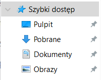

POWRÓT Aby pobraæ jakikolwiek program wystarczy wpisaæ nazwê danego programu w przegl±darce, gdy wejdziemy na stronê oprogramowania które chcemy pobraæ musimy szukaæ du¿ego napisu “DOWNLOAD”, który pozwoli nam pobraæ dany plik. Je¿eli nie mamy tego pliku szukamy u góry b±d¼ gdzie¶ z boku download nastêpnie prawdopobnie zostaniemy przekierowani na inna stronê. Teraz scenariuszy mo¿e byæ wiele na tym etapie najwa¿niejsze rzeczy czyli, je¶li musimy wybrac na jaki system potrzebujemy wybieramy WINDOWS 10 64bit, je¿eli bedzie do wyboru wiele ró¿nych nazw plików klikamy na tê która jest u samej góry (najnowsza wersja). Nastêpnie gdy pomy¶lnie pobierzemy instalator, uka¿e nam siê on u do³u ekranu a nastêpnie trzeba klikn±æ w niego dwa razy by siê uruchomi³. Je¿eli siê nie pojawi na dole ekranu naciskaj±c skrót klawiszowy WINDOWS + E otworzy nam siê eksplorator gdzie musimy wej¶æ w Pobrane

W “Pobrane” powinni¶my znale¼æ instalator (u samej góry), klikamy wtedy w niego 2 razy.
Gdy w koñcu uruchomi nam siê instalator bêdziemy musieli wybraæ folder i dysk w którym ma sie zainstalowaæ nasz program, klikajac w pole z napisem “C/Admin…” mo¿emy zmieniæ miejsce zainstalowania pliku, wystarczy tam zaznaczyæ interesuj±ce nas miejsce na tym b±d¼ innym dysku i klikn±æ dalej. Nastêpnie wyskoczy nam licencja programu i regulamin który musimy zaakceptowaæ i nastêpnie klikn±æ dalej. Nastêpnie nasz program prawdopodobnie siê zainstaluje a na koñcu spyta nas czy chcemy odpaliæ od razu program. UWAGA! niektóre programy wymagaj± ponownego odpalenia komputera by mog³y dzia³aæ.
Projekt realizowany na olimpiadê "Zwolnieni z Teorii" Nie ma twojego problemu? Skontaktuj siê z nami poprzez formularz
Wszystkie prawa zastrze¿one Kopiowanie i rozpowszechnianie bez zgody Nak³adka E-Pomocy zabronione